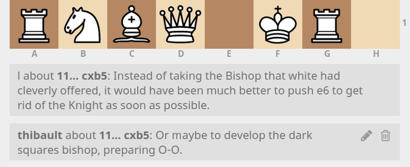
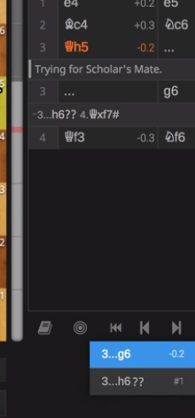
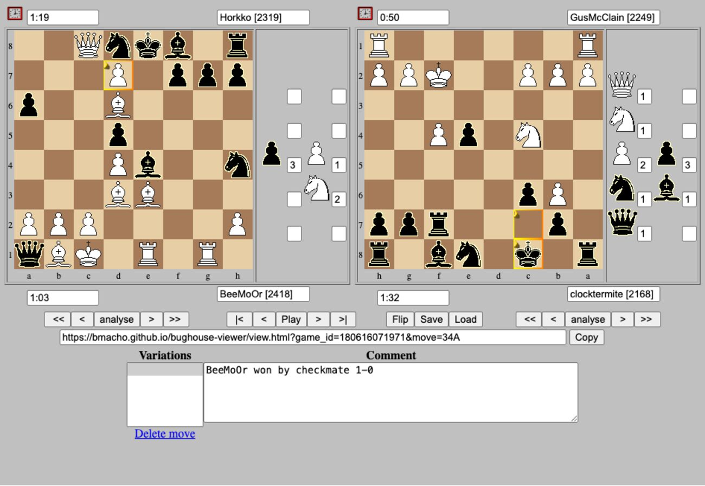

12 · Engine eval-line row
Live fixture component: score formatting, explicit job states, ranked drop-notation lines, pockets, enable and expand controls, partner-board limitation, and Fairy-Stockfish attribution. No engine endpoint is called.
13 · Flashcard / study card
Live fixture component: coupled position, played and alternative moves, glyph-specific question, both boards’ pockets and all four clocks, authored answer, and moment address. Nothing is persisted or editable.
23 · Study glyph picker
Live fixture component: number keys 1–6 follow the required NAG mapping, with a native dropdown as the pointer fallback and an announced selection. Reimplemented from the interaction pattern only; no Lichess markup, CSS, or code is used.
wizard shell (unnumbered, pending block assignment)
Fixture harness for locked annotation steps 1 and 2. Steps 3 and 4 are visible inert placeholders; there is no save, submit, or persistence path.
1 · Rail — icon-only nav
2 · Dock tab row + sub-tabs
3 · Onboarding capture modal
Review what I command you to review
4 · Guest Spawn CTA
5 · Matchup card (guest list)
6 · Player bar + pocket + clock
7 · Move list w/ drops
8 · Locked feature card
9 · Progression nodes
10 · Buttons — three states
11 · Tokens
14–22 + 24–25 · Screenshot specimens — temporary references
Captured third-party UI is retained here only as a build target. These pixels never migrate into app components. Registry: 1–11 canonical · 12–16 Bv2 · 17–21 curated · 22–24 Bv2 annotation · 25 Bv2 paired viewer · next specimen is 26.
License boundary: Lichess code references are AGPL-3.0 and exist only as clearly headed excerpts in docs/specimens/. No Lichess code is embedded on this page or elsewhere under frontend/ or backend/; any future feature must be reimplemented from behavior, never pasted.
14 · Lichess analysis module
UI of interest: a narrow, self-contained analysis column with pocket rails, engine status and controls, a deep content well, and compact bottom navigation. The structural lesson is modular stacking beside a primary board, not Lichess's graphics or skin.

15 · Chess.com notification settings patterns
UI of interest: notification categories as collapsible rows, one expanded category, global and per-event toggles, and explicit delivery-channel checkboxes. The reference is for hierarchy and state density only; icons, palette, type, and controls must be redrawn.

16 · Typography hierarchy — H1 / H2
UI of interest: a light, sentence-case page H1 with generous separation from body copy, followed by a similarly weighted but smaller H2. Target: a restrained content hierarchy for reference and settings pages, rebuilt with project tokens.

17 · Archive favorites rows
Row anatomy combines variant and time-control cues, stacked opponents and results, a Review action, move count, date, favorite heart, and selection checkbox beneath a filter tab strip. Target: refine canonical block 5 and its flashcard-adjacent bookmark state.

18 · Player stats table
Type icon and label, rating with delta, blurred premium columns, row chevrons, and a Show More disclosure demonstrate dense statistics with visible-but-locked depth. Target: the Statistics STAGE without copying icons, blur treatment, or skin.

19 · Player clock — inactive / dimmed
The inactive player bar recedes through a dark clock face and reduced contrast while identity and rating remain readable. Pair with block 20 to document turn-state fading for Board A/B player bars.

20 · Player clock — active / bright
The active player bar makes the clock the brightest object while preserving the same identity strip. Together blocks 19–20 isolate the fade/brighten-by-turn behavior rather than a one-off visual state.

21 · Full analysis dock
Tab triplet, engine header, ranked eval lines, game result header, move classifications, per-move time bars, jump controls, and New/Save/Review footer form one vertically ordered dock. Target: the engine-card group and Moves-tab upgrade, rebuilt in project tokens.

22 · Position-bound comment display
The selected position carries authored prose with visible attribution and edit/delete affordances. Target lesson only: a learning-moment note belongs to one position in one game, rather than to the game as an unanchored whole.

24 · Alternate lines at the current position
A tightly cropped historical study view shows alternate continuations presented as sibling choices beneath the move panel at the current path. Target lesson only: related lines branch from a position and remain navigable as alternatives.

25 · Loaded two-board Bughouse viewer
One loaded match keeps both boards, four player identities and ratings, clocks, pockets, paired navigation, a position-address URL, variations, and a position comment in one utilitarian surface. Target lesson only: retain the coupled-board context around a learning moment. The viewer's piece graphics have unclear provenance and must never migrate into the app.
